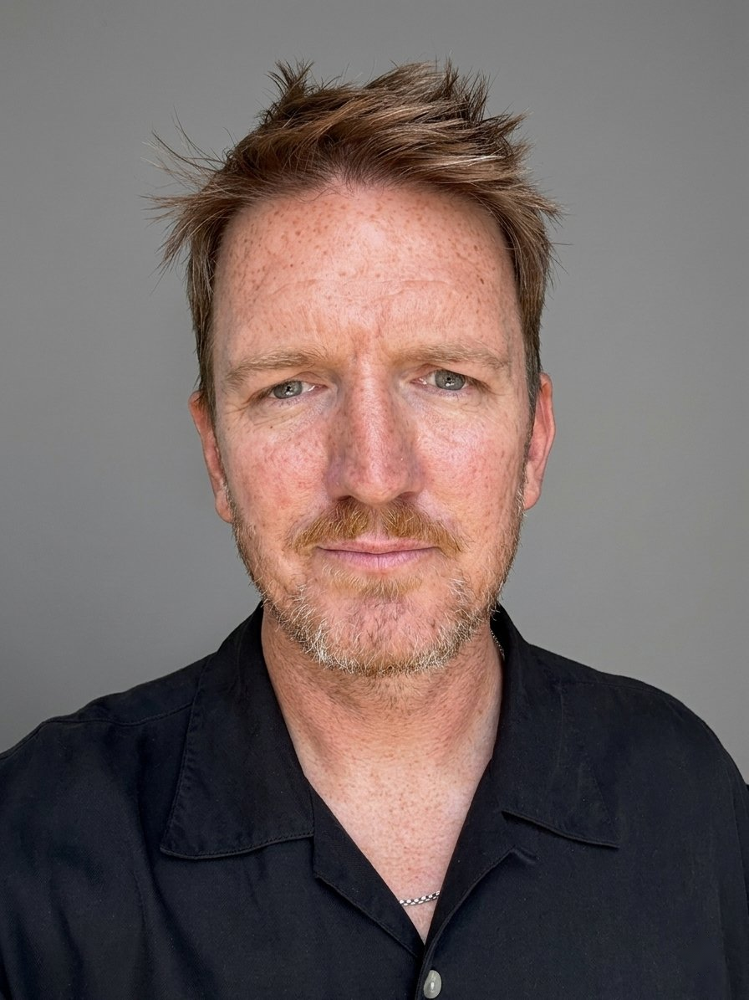
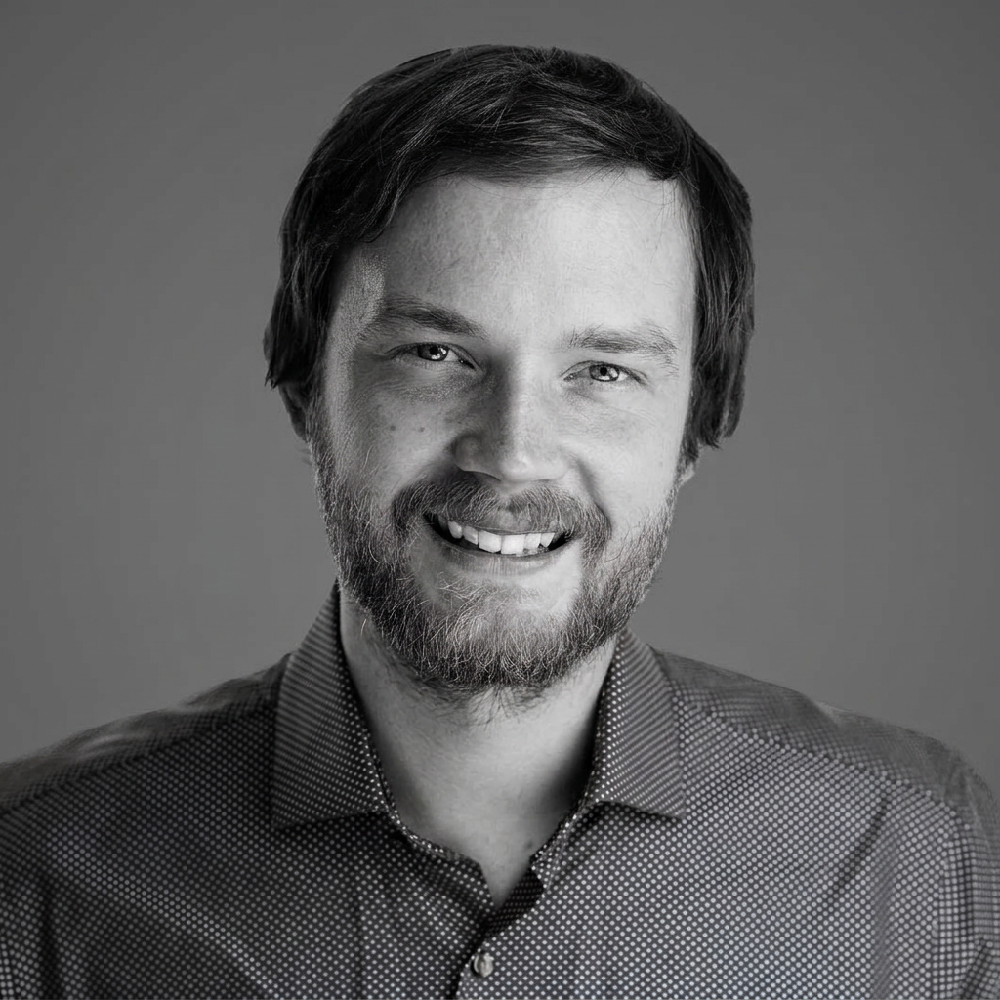

Co-founder
Jonny Dawson
Twenty years in the creative industries, a founder several times over. CEO of a global music company, with $70M+ in M&A across entertainment and tech.
We come from that world.
Principals

Co-founder
Twenty years in the creative industries, a founder several times over. CEO of a global music company, with $70M+ in M&A across entertainment and tech.

Co-founder
A machine-learning engineer and fractional CTO with fifteen years building AI systems. A Harvard mathematician who has built large-scale AI and data systems at Google and Reddit, led AI engineering at Yahoo, and ran his own AI studio for a decade. His work sits at the front of the current wave: retrieval systems, agentic automation, and the infrastructure behind AI-first search.
How we work
Small by design. We take on very few, and we stay close to the ones we do. Your relationship is with us, and we stand behind everything we build.
Contact
Conversations start with Jonny.
jonny@currentformstudio.com